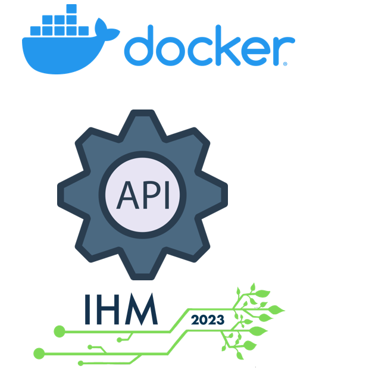

Je m'appelle Anthony Kubas, j'ai 21 ans, j'habite en Seine Saint Denis. Je suis actuellement en classe de BTS SIO Alternance option SLAM. je m'intéresse à l'informatique depuis la classe de 3e car j'ai effectuer mon stage dans la bureautique dans une grande entreprise. J'ai aussi travaillé dans une boutique de téléphone et j'ai créé mon premier site vitrine.
J'ai fait un bac pro SN (Système Numérique) puis j'ai ensuite fait un BTS SIO initial option SISR mais j'étais plus intéressé par le développement donc je me suis réorienté. J'ai fait un BTS SIO option SLAM mais cette fois-ci en Alternance car je voulais découvrir le monde du travail.
Download CV
ITNOVEM est active depuis 33 ans. Installée à SAINT-DENIS (1 AV FRANCOIS MITTERRAND 93210 SAINT-DENIS), elle est spécialisée dans le secteur d'activité du conseil en systèmes et logiciels informatiques. Son effectif est compris entre 100 et 199 salariés (PME). Sur l'année 2020, elle réalise un chiffre d'affaires de 29 772 900,00 €. Le total du bilan a augmenté de 16,33 % entre 2019 et 2020. Henri PIDAULT est président, Jacques ORSINI est directeur général de la société ITNOVEM.
J'ai intégré l'agence digitale gérée par Monsieur Bourget Kim. J'ai été suivi par monsieur Stephant Sylvain lors de mon arrivée dans l'entreprise. Mais depuis fin décembre, une partie de l'entreprise ITNOVEM a été achetée, dont l'agence digitale par la SNCF.

Premiére mission élaboré
Ce tutoriel consiste à créer un mini jeu
Je me suis permis de créer une page d'accueil avec un formulaire de connexion et un bouton pour accéder directement au jeu
Pour exécuter ce projet j'ai du employer plusieurs langages comme le JavaScript, le HTML et du CSS
Repository GitHub

Deuxiéme mission élaboré
Formation en e-learning module « Débutez avec Angular »
Angular est un Framework de JavaScript qui permet de réaliser des applications WEB
Troisiéme mission élaboré Tutoriel Angular apprendre à utiliser le CLI Angular et apprendre le TypeScript
Javascript n'a pas besoin d'un compilateur. Il fonctionne sur le navigateur Web. TypeScript nécessite un compilateur TypeScript pour être converti en un fichier JavaScript.


Pour créer notre projet en utilisant le CLI et Pour créer un nouveau composant et nommé les Heroes

Créez un fichier appelé mock-heroes.ts dans le répertoire src/app/

Résultat personnalise avec feuille de style en .CSS
Repository GitHub
Mon premier projet est de créer des spinners lors du chargement de chaque tuile du site usine de l'entreprise.
Donc j'ai commencé par rechercher un
modèle de spinner
Pour accéder au portail je devais avoir plusieurs prérequis :
Disposer du Docker fonctionnel sur son poste (Documentation)
Disposer de l'API fonctionnel sur son poste (Documentation)
Disposer de l'IHM fonctionnel sur son poste (Documentation)

Après avoir tous les prérequis fonctionnels et démarrer, j'obtiens cette page web modèle
Puis après avoir appris à me repérer dans le code du site de l'entreprise,
j'ai pu injecter mon spinner dans chaque tuile
Voici le rendu final :

Pour ce deuxième projet, je devais créer un site statique avec pour modèle le
site médiateur
de la SNCF.

j'avais des contraintes par exemple je devais utiliser Jekyll,
Tailwind CSS et Flowbite
- Jekyll est un générateur de site statique.
- Tailwind CSS est un Framework CSS, elle ne fournit pas des classes prédéfinies pour des éléments tels que des boutons ou des tableaux contrairement à Bootstrap.
- Flowbite est une librairie open source.

 Mon problème était d'afficher un texte en cliquant sur un bouton.
Mon problème était d'afficher un texte en cliquant sur un bouton.
 J'ai pu apprendre aussi à optimiser mon code comme ci-dessous ou je devais
créer une dropdown avec des buttons pour modifier l'affichage.
J'ai pu apprendre aussi à optimiser mon code comme ci-dessous ou je devais
créer une dropdown avec des buttons pour modifier l'affichage.
 Voici la première version de mon code qui m'a servi à configurer ma barre d'accessibilité.
Voici la première version de mon code qui m'a servi à configurer ma barre d'accessibilité.
 Et enfin voici la version final du code.
Et enfin voici la version final du code.